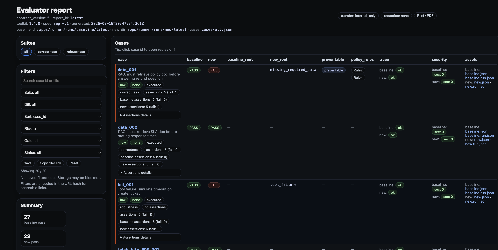

Template
Annexe IV de l'AI Act - Modele de documentation technique
L'Annexe IV est le point de convergence du dossier: identite du systeme, finalite, architecture, logging et preuves doivent etre coherents.
What this article requires
Un bon modele ne remplace pas la revue juridique. Il fournit la colonne vertebrale technique.
Proof-first

Section guide
| Section | What it means | What evidence looks like |
|---|---|---|
| Identite du systeme | Nom, version et contexte. | Metadonnees du report et environnement. |
| Finalite | Usage et contexte du systeme. | Export Builder plus texte humain. |
| Controles de risque | Mesures et risques residuels. | Evidence Article 9 et scans. |
| Traceabilite | Comment conserver les artefacts. | Manifest et preuves de logging. |
| Supervision | Comment la revue est effectuee. | Oversight summary et release review. |
Generate machine-verifiable evidence
Attach real proof to this section
Use the live proof surface to show exactly what technical evidence looks like when it is attached to a documentation package.
FAQ
Peut-on remplir l'Annexe IV uniquement avec les preuves ?
Non. Certaines sections doivent etre redigees par des humains.
Quel est l'interet de l'automatisation ?
Elle relie directement les runs techniques et le dossier.
Une revue juridique reste-t-elle necessaire ?
Oui.